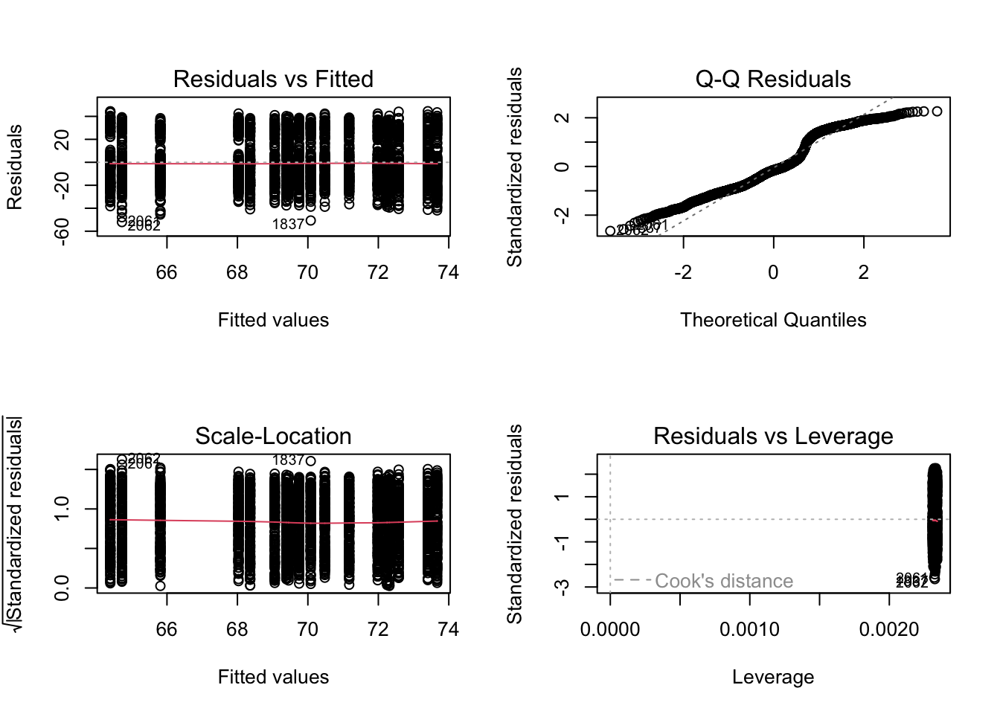
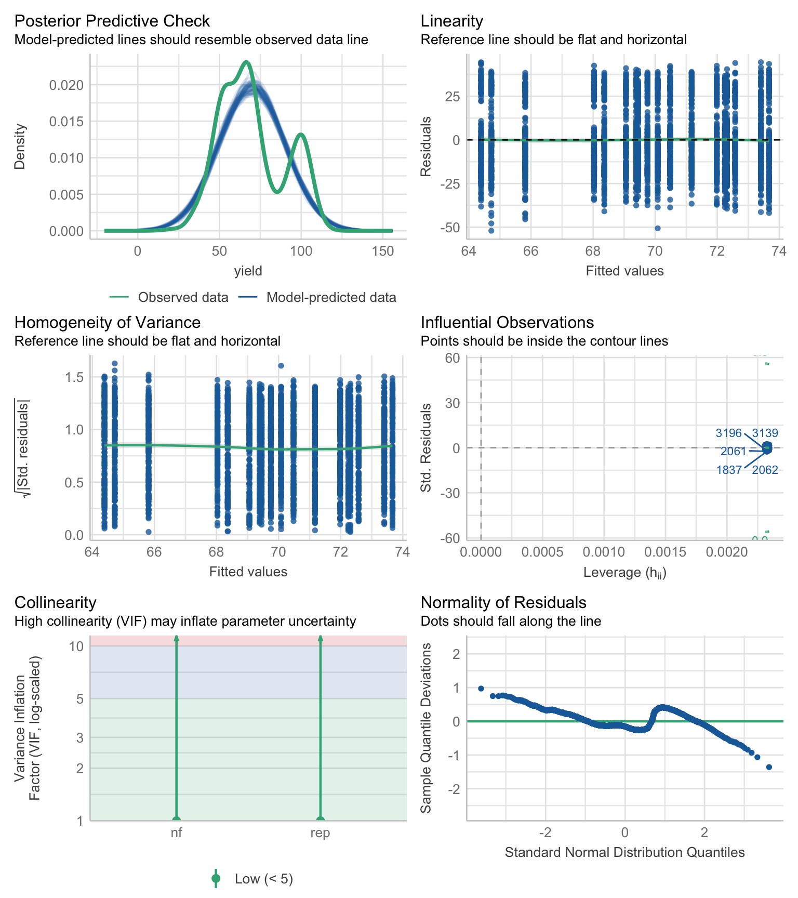

# Load required packages
library(pacman)
p_load(dplyr, tidyr)
p_load(agridat)
p_load(broom)
p_load(emmeans)
p_load(multcomp, multcompView)
p_load(car) # for assumption checks
p_load(performance) # for assumption checksModels III: Linear Models in Ag-Data Science
linear models
R
statistics
agriculture
1 Introduction
Linear models are foundational in statistical analysis, particularly in agricultural data science. These models allow researchers to evaluate relationships between variables and assess treatment effects in experiments. This document covers the essentials of linear modeling in R using stats, car, broom, emmeans, multcomp, and cld for statistical inference and means comparisons.
2 What is a Linear Model?
A linear model is a mathematical equation describing the relationship between a response variable (dependent) and one or more explanatory variables (independent). The simplest form is:
\[ Y = \beta_0 + \beta_1 X + ... + \beta_2 X ... + \epsilon \]
where:
\[Y\] is the dependent variable (response variable),
\[X\] is the independent variable (matrix of experimental design),
\[ \beta_0 \] is the intercept,
\[ \beta_1 \] is the effect of factor #1 on Y (i.e. slope (regression) or mean effect (anova)),
\[ \beta_2 \] is the effect of factor #2 on Y (i.e. slope (regression) or mean effect (anova)),
\[ \epsilon \] represents error (unexplained variation).
Note: A polynomial term–a quadratic (squared or \(2^{nd}\) order) or cubic (\(3^{rd}\) order) term turns a linear regression model into a curve. But because it is X that is squared or cubed, not the Beta coefficient ($ $), it still qualifies as a linear model.
2.1 Regression vs. ANOVA
Regression Analysis: Used when the explanatory variable(s) are continuous (e.g., predicting yield from nitrogen levels).
ANOVA (Analysis of Variance): Used when at least one explanatory variable is categorical (e.g., comparing mean yields across different treatments).
Technically, ANOVA is a type of linear model, but its focus is on comparing means across groups (made from categorical predictors), while regression aims to quantify the relationship between continuous variables.
We will use the data_corn dataset from the agridat package.
Load dataset:
data_corn <- agridat::lasrosas.corn
# Inspect dataset
glimpse(data_corn)Rows: 3,443
Columns: 9
$ year <int> 1999, 1999, 1999, 1999, 1999, 1999, 1999, 1999, 1999, 1999, 1999…
$ lat <dbl> -33.05113, -33.05115, -33.05116, -33.05117, -33.05118, -33.05120…
$ long <dbl> -63.84886, -63.84879, -63.84872, -63.84865, -63.84858, -63.84851…
$ yield <dbl> 72.14, 73.79, 77.25, 76.35, 75.55, 70.24, 76.17, 69.17, 69.77, 6…
$ nitro <dbl> 131.5, 131.5, 131.5, 131.5, 131.5, 131.5, 131.5, 131.5, 131.5, 1…
$ topo <fct> W, W, W, W, W, W, W, W, W, W, W, W, W, W, W, W, W, W, W, W, W, W…
$ bv <dbl> 162.60, 170.49, 168.39, 176.68, 171.46, 170.56, 172.94, 171.86, …
$ rep <fct> R1, R1, R1, R1, R1, R1, R1, R1, R1, R1, R1, R1, R1, R1, R1, R1, …
$ nf <fct> N5, N5, N5, N5, N5, N5, N5, N5, N5, N5, N5, N5, N5, N5, N5, N5, …3 Model Fitting: Linear Regression & ANOVA
3.1 Simple Linear Regression (Continuous Predictor)
reg_fit <- lm(yield ~ 1 + nitro, data = data_corn)
summary(reg_fit)
Call:
lm(formula = yield ~ 1 + nitro, data = data_corn)
Residuals:
Min 1Q Median 3Q Max
-53.183 -15.341 -3.079 13.725 45.897
Coefficients:
Estimate Std. Error t value Pr(>|t|)
(Intercept) 65.843213 0.608573 108.193 < 2e-16 ***
nitro 0.061717 0.007868 7.845 5.75e-15 ***
---
Signif. codes: 0 '***' 0.001 '**' 0.01 '*' 0.05 '.' 0.1 ' ' 1
Residual standard error: 19.66 on 3441 degrees of freedom
Multiple R-squared: 0.01757, Adjusted R-squared: 0.01728
F-statistic: 61.54 on 1 and 3441 DF, p-value: 5.754e-15# Comparing analysis of variance options
anova(reg_fit)Analysis of Variance Table
Response: yield
Df Sum Sq Mean Sq F value Pr(>F)
nitro 1 23790 23790.3 61.537 5.754e-15 ***
Residuals 3441 1330307 386.6
---
Signif. codes: 0 '***' 0.001 '**' 0.01 '*' 0.05 '.' 0.1 ' ' 1car::Anova(reg_fit, type = 2)Anova Table (Type II tests)
Response: yield
Sum Sq Df F value Pr(>F)
nitro 23790 1 61.537 5.754e-15 ***
Residuals 1330307 3441
---
Signif. codes: 0 '***' 0.001 '**' 0.01 '*' 0.05 '.' 0.1 ' ' 1car::Anova(reg_fit, type = 3)Anova Table (Type III tests)
Response: yield
Sum Sq Df F value Pr(>F)
(Intercept) 4525464 1 11705.665 < 2.2e-16 ***
nitro 23790 1 61.537 5.754e-15 ***
Residuals 1330307 3441
---
Signif. codes: 0 '***' 0.001 '**' 0.01 '*' 0.05 '.' 0.1 ' ' 13.2 Linear Regression, no-intercept
reg_noint <- lm(yield ~ -1 + nitro, data = data_corn)
summary(reg_fit)
Call:
lm(formula = yield ~ 1 + nitro, data = data_corn)
Residuals:
Min 1Q Median 3Q Max
-53.183 -15.341 -3.079 13.725 45.897
Coefficients:
Estimate Std. Error t value Pr(>|t|)
(Intercept) 65.843213 0.608573 108.193 < 2e-16 ***
nitro 0.061717 0.007868 7.845 5.75e-15 ***
---
Signif. codes: 0 '***' 0.001 '**' 0.01 '*' 0.05 '.' 0.1 ' ' 1
Residual standard error: 19.66 on 3441 degrees of freedom
Multiple R-squared: 0.01757, Adjusted R-squared: 0.01728
F-statistic: 61.54 on 1 and 3441 DF, p-value: 5.754e-15summary(reg_noint)
Call:
lm(formula = yield ~ -1 + nitro, data = data_corn)
Residuals:
Min 1Q Median 3Q Max
-64.435 -7.134 20.741 45.962 108.840
Coefficients:
Estimate Std. Error t value Pr(>|t|)
nitro 0.772271 0.009088 84.98 <2e-16 ***
---
Signif. codes: 0 '***' 0.001 '**' 0.01 '*' 0.05 '.' 0.1 ' ' 1
Residual standard error: 41.25 on 3442 degrees of freedom
Multiple R-squared: 0.6772, Adjusted R-squared: 0.6771
F-statistic: 7222 on 1 and 3442 DF, p-value: < 2.2e-16# Comparing analysis of variance options
anova(reg_noint)Analysis of Variance Table
Response: yield
Df Sum Sq Mean Sq F value Pr(>F)
nitro 1 12286371 12286371 7221.9 < 2.2e-16 ***
Residuals 3442 5855771 1701
---
Signif. codes: 0 '***' 0.001 '**' 0.01 '*' 0.05 '.' 0.1 ' ' 1Anova(reg_noint, type = 3)Anova Table (Type III tests)
Response: yield
Sum Sq Df F value Pr(>F)
nitro 12286371 1 7221.9 < 2.2e-16 ***
Residuals 5855771 3442
---
Signif. codes: 0 '***' 0.001 '**' 0.01 '*' 0.05 '.' 0.1 ' ' 1Anova(reg_noint, type = 2)Anova Table (Type II tests)
Response: yield
Sum Sq Df F value Pr(>F)
nitro 12286371 1 7221.9 < 2.2e-16 ***
Residuals 5855771 3442
---
Signif. codes: 0 '***' 0.001 '**' 0.01 '*' 0.05 '.' 0.1 ' ' 13.3 ANOVA (Categorical Predictors)
anova_crd <- lm(yield ~ nf, data = data_corn) # assuming CRD
anova_fit <- lm(yield ~ nf + rep, data = data_corn) # assuming RCBD
anova_03 <- lm(yield ~ nf*rep, data = data_corn) # assuming RCBD
Anova(anova_crd, type = 3)Anova Table (Type III tests)
Response: yield
Sum Sq Df F value Pr(>F)
(Intercept) 2418907 1 6250.447 < 2.2e-16 ***
nf 23987 5 12.396 6.075e-12 ***
Residuals 1330110 3437
---
Signif. codes: 0 '***' 0.001 '**' 0.01 '*' 0.05 '.' 0.1 ' ' 1#Anova(anova_fit, type = 3)
Anova(anova_03, type = 3)Anova Table (Type III tests)
Response: yield
Sum Sq Df F value Pr(>F)
(Intercept) 799899 1 2063.2074 < 2.2e-16 ***
nf 7035 5 3.6290 0.002818 **
rep 88 2 0.1139 0.892378
nf:rep 977 10 0.2520 0.990548
Residuals 1327862 3425
---
Signif. codes: 0 '***' 0.001 '**' 0.01 '*' 0.05 '.' 0.1 ' ' 13.4 ANOVA, no-intercept
anova_noint <- lm(yield ~ -1 + nf + rep, data = data_corn)
Anova(anova_noint, type = 3)Anova Table (Type III tests)
Response: yield
Sum Sq Df F value Pr(>F)
nf 5575937 6 2402.2655 <2e-16 ***
rep 1271 2 1.6429 0.1936
Residuals 1328839 3435
---
Signif. codes: 0 '***' 0.001 '**' 0.01 '*' 0.05 '.' 0.1 ' ' 1summary(anova_fit)
Call:
lm(formula = yield ~ nf + rep, data = data_corn)
Residuals:
Min 1Q Median 3Q Max
-52.062 -15.476 -3.079 13.468 44.495
Coefficients:
Estimate Std. Error t value Pr(>|t|)
(Intercept) 64.7216 0.9486 68.225 < 2e-16 ***
nfN1 3.6395 1.1600 3.138 0.00172 **
nfN2 4.6679 1.1630 4.014 6.11e-05 ***
nfN3 5.3600 1.1610 4.617 4.04e-06 ***
nfN4 7.5916 1.1625 6.530 7.53e-11 ***
nfN5 7.8559 1.1610 6.767 1.54e-11 ***
repR2 -0.3301 0.8213 -0.402 0.68775
repR3 1.0915 0.8210 1.329 0.18377
---
Signif. codes: 0 '***' 0.001 '**' 0.01 '*' 0.05 '.' 0.1 ' ' 1
Residual standard error: 19.67 on 3435 degrees of freedom
Multiple R-squared: 0.01865, Adjusted R-squared: 0.01665
F-statistic: 9.327 on 7 and 3435 DF, p-value: 1.708e-11summary(anova_noint)
Call:
lm(formula = yield ~ -1 + nf + rep, data = data_corn)
Residuals:
Min 1Q Median 3Q Max
-52.062 -15.476 -3.079 13.468 44.495
Coefficients:
Estimate Std. Error t value Pr(>|t|)
nfN0 64.7216 0.9486 68.225 <2e-16 ***
nfN1 68.3611 0.9464 72.235 <2e-16 ***
nfN2 69.3895 0.9495 73.082 <2e-16 ***
nfN3 70.0816 0.9478 73.940 <2e-16 ***
nfN4 72.3132 0.9491 76.195 <2e-16 ***
nfN5 72.5775 0.9478 76.573 <2e-16 ***
repR2 -0.3301 0.8213 -0.402 0.688
repR3 1.0915 0.8210 1.329 0.184
---
Signif. codes: 0 '***' 0.001 '**' 0.01 '*' 0.05 '.' 0.1 ' ' 1
Residual standard error: 19.67 on 3435 degrees of freedom
Multiple R-squared: 0.9268, Adjusted R-squared: 0.9266
F-statistic: 5433 on 8 and 3435 DF, p-value: < 2.2e-164 Model Assumptions
Linear models assume:
- Linearity: Relationship between predictors and response is linear (continuous).
# Residual diagnostics
par(mfrow=c(2,2))
plot(anova_fit)
- Normality of Residuals: Residuals should be normally distributed.
# Normality test
shapiro.test(resid(anova_fit))
Shapiro-Wilk normality test
data: resid(anova_fit)
W = 0.94724, p-value < 2.2e-16- Homoscedasticity: Equal variance across all levels of predictors.
# Homoscedasticity check
leveneTest(anova_crd) #1-way anova, only nf and CRD
leveneTest(anova_fit) #2-way anova including blocks- Independence: Observations are independent (i.e. the “error” of replications is independent).
There is no test for independence. You have to make sure you specify the error-structure correctly for potential autocorrelation (e.g. blocks, split-plots, repeated measures, etc.).
- Performance package With the
performancepackage, we could check all at once.
performance::check_model(anova_fit)
5 Model Selection: AIC/BIC Criteria
5.1 Candidate models
These are all fixed-effect models.
# null model
lm_00 <- lm(yield ~ 1, data = data_corn)
# Simplest model
lm_01 <- lm(yield ~ nf + rep, data = data_corn)
# Add year
lm_02 <- lm(yield ~ nf + year + rep, data = data_corn)
# Add topo
lm_03 <- lm(yield ~ nf + topo + rep, data = data_corn)
# Add year and topo
lm_04 <- lm(yield ~ nf + year + topo + rep, data = data_corn)
# Main effects and interactions
lm_05 <- lm(yield ~ nf*year*topo + rep, data = data_corn)
#lm_05 <- lm(yield ~ nf + year + topo + nf:year + nf:topo + year:topo + nf:year:topo + rep, data = data_corn)5.2 Selection criteria
5.2.1 F-Test
- F-tests evaluate if added predictors significantly improve model fit via sum of squares and degrees of freedom.
anova(lm_01, lm_02, lm_03, lm_04, lm_05)Analysis of Variance Table
Model 1: yield ~ nf + rep
Model 2: yield ~ nf + year + rep
Model 3: yield ~ nf + topo + rep
Model 4: yield ~ nf + year + topo + rep
Model 5: yield ~ nf * year * topo + rep
Res.Df RSS Df Sum of Sq F Pr(>F)
1 3435 1328839
2 3434 1231526 1 97313 914.137 < 2.2e-16 ***
3 3432 705730 2 525796 2469.604 < 2.2e-16 ***
4 3431 585070 1 120660 1133.457 < 2.2e-16 ***
5 3393 361197 38 223873 55.342 < 2.2e-16 ***
---
Signif. codes: 0 '***' 0.001 '**' 0.01 '*' 0.05 '.' 0.1 ' ' 15.2.2 AIC (Akaike Information Criterion)
- AIC balances goodness of fit with model complexity.
AIC(lm_01, lm_02, lm_03, lm_04, lm_05) df AIC
lm_01 9 30294.35
lm_02 10 30034.50
lm_03 12 28121.52
lm_04 13 27477.95
lm_05 51 25893.365.2.3 BIC (Bayesian Information criterion)
- BIC applies a stricter penalty for complexity, favoring simpler models.
BIC(lm_01, lm_02, lm_03, lm_04, lm_05) df BIC
lm_01 9 30349.64
lm_02 10 30095.94
lm_03 12 28195.25
lm_04 13 27557.82
lm_05 51 26206.716 Significance of effects
# Compare Anova sum of squares
Anova(lm_05, type = 2)Anova Table (Type II tests)
Response: yield
Sum Sq Df F value Pr(>F)
nf 24028 20 11.2855 < 2.2e-16 ***
year 120553 1 1132.4508 < 2.2e-16 ***
topo 648289 18 338.3269 < 2.2e-16 ***
rep 3995 2 18.7623 7.877e-09 ***
nf:year 1486 5 2.7919 0.01601 *
nf:topo 2126 15 1.3315 0.17376
year:topo 218811 3 685.1532 < 2.2e-16 ***
nf:year:topo 1869 15 1.1704 0.28739
Residuals 361197 3393
---
Signif. codes: 0 '***' 0.001 '**' 0.01 '*' 0.05 '.' 0.1 ' ' 1Anova(lm_05, type = 3)Anova Table (Type III tests)
Response: yield
Sum Sq Df F value Pr(>F)
(Intercept) 26405 1 248.0418 < 2.2e-16 ***
nf 322 5 0.6050 0.6961
year 26539 1 249.2978 < 2.2e-16 ***
topo 38269 3 119.8315 < 2.2e-16 ***
rep 3995 2 18.7623 7.877e-09 ***
nf:year 321 5 0.6039 0.6970
nf:topo 1868 15 1.1701 0.2876
year:topo 38337 3 120.0429 < 2.2e-16 ***
nf:year:topo 1869 15 1.1704 0.2874
Residuals 361197 3393
---
Signif. codes: 0 '***' 0.001 '**' 0.01 '*' 0.05 '.' 0.1 ' ' 17 Means Comparisons with emmeans and cld
7.1 Interaction
# Pairwise comparisons among treatment means
emmeans(lm_05, pairwise ~ year:topo) %>%
cld(., level = 0.05, decreasing = F) year topo emmean SE df lower.CL upper.CL .group
2001 HT 44.6 0.497 3393 44.6 44.6 1
1999 HT 53.4 0.549 3393 53.4 53.5 2
1999 E 64.8 0.538 3393 64.7 64.8 3
1999 W 66.0 0.438 3393 65.9 66.0 34
2001 W 67.7 0.467 3393 67.7 67.8 4
1999 LO 71.3 0.481 3393 71.3 71.3 5
2001 E 92.7 0.543 3393 92.6 92.7 6
2001 LO 99.9 0.501 3393 99.9 99.9 7
Results are averaged over the levels of: nf, rep
Confidence level used: 0.05
P value adjustment: tukey method for comparing a family of 8 estimates
significance level used: alpha = 0.05
NOTE: If two or more means share the same grouping symbol,
then we cannot show them to be different.
But we also did not show them to be the same. 7.2 Alternative
Using the same model, same sum of squares we could group comparisons differently. In this case, showing comparisons of topo means, grouped by “year”
emmeans(lm_05, pairwise ~ topo, by = "year") %>%
cld(., level = 0.05, decreasing = FALSE, Letters = letters) # add lettersyear = 1999:
topo emmean SE df lower.CL upper.CL .group
HT 53.4 0.549 3393 53.4 53.5 a
E 64.8 0.538 3393 64.7 64.8 b
W 66.0 0.438 3393 65.9 66.0 b
LO 71.3 0.481 3393 71.3 71.3 c
year = 2001:
topo emmean SE df lower.CL upper.CL .group
HT 44.6 0.497 3393 44.6 44.6 a
W 67.7 0.467 3393 67.7 67.8 b
E 92.7 0.543 3393 92.6 92.7 c
LO 99.9 0.501 3393 99.9 99.9 d
Results are averaged over the levels of: nf, rep
Confidence level used: 0.05
P value adjustment: tukey method for comparing a family of 4 estimates
significance level used: alpha = 0.05
NOTE: If two or more means share the same grouping symbol,
then we cannot show them to be different.
But we also did not show them to be the same. # By default in R
LETTERS [1] "A" "B" "C" "D" "E" "F" "G" "H" "I" "J" "K" "L" "M" "N" "O" "P" "Q" "R" "S"
[20] "T" "U" "V" "W" "X" "Y" "Z"letters [1] "a" "b" "c" "d" "e" "f" "g" "h" "i" "j" "k" "l" "m" "n" "o" "p" "q" "r" "s"
[20] "t" "u" "v" "w" "x" "y" "z"8 Interpreting Coefficients
8.1 Regression
Intercept (\(\beta_0\)): Baseline value of the dependent variable. Is the value of Y, when X = 0.
Slope (\(\beta_1\)): Change in response variable (Y) per unit increase in predictor (X).
p-value: Significance of predictor effect.
We can extract regression coefficient estimates with the ‘coef()’ function, or with the ‘tidy()’ function of the “broom” package.
# Extracting coefficients with coef()
coef(reg_fit)(Intercept) nitro
65.84321305 0.06171718 # Tidy summary of coefficients
reg_coefs <- broom::tidy(reg_fit)
reg_coefs# A tibble: 2 × 5
term estimate std.error statistic p.value
<chr> <dbl> <dbl> <dbl> <dbl>
1 (Intercept) 65.8 0.609 108. 0
2 nitro 0.0617 0.00787 7.84 5.75e-158.2 ANOVA
- Intercept: the reference or benchmark level (baseline mean) for categorical predictors.
- Factor Levels: estimates of mean differences “with respect to” the intercept (if any, if not, from zero).
- p-value: whether a factor significantly differs from baseline.
We can also extract ANOVA coefficient estimates with the ‘coef()’ function, or with the ‘tidy()’ function of the “broom” package.
# Extracting coefficients with coef()
coef(lm_05) (Intercept) nfN1 nfN2 nfN3
-2.930444e+04 7.134866e+01 4.085152e+02 3.143485e+03
nfN4 nfN5 year topoHT
2.469591e+03 2.724513e+03 1.468933e+01 3.840595e+04
topoLO topoW repR2 repR3
-8.387929e+02 2.518130e+04 4.372000e-01 2.476942e+00
nfN1:year nfN2:year nfN3:year nfN4:year
-3.417600e-02 -2.023608e-01 -1.569826e+00 -1.232124e+00
nfN5:year nfN1:topoHT nfN2:topoHT nfN3:topoHT
-1.359608e+00 -3.857242e+03 -2.925203e+03 -4.044360e+03
nfN4:topoHT nfN5:topoHT nfN1:topoLO nfN2:topoLO
-1.041123e+03 1.878725e+03 3.636709e+03 1.417504e+03
nfN3:topoLO nfN4:topoLO nfN5:topoLO nfN1:topoW
-2.679130e+03 -1.098798e+02 -1.411964e+03 -5.869613e+01
nfN2:topoW nfN3:topoW nfN4:topoW nfN5:topoW
3.338172e+03 -2.204795e+03 3.275604e+03 1.455853e+03
year:topoHT year:topoLO year:topoW nfN1:year:topoHT
-1.921966e+01 4.227740e-01 -1.259712e+01 1.930477e+00
nfN2:year:topoHT nfN3:year:topoHT nfN4:year:topoHT nfN5:year:topoHT
1.464313e+00 2.024633e+00 5.232640e-01 -9.370874e-01
nfN1:year:topoLO nfN2:year:topoLO nfN3:year:topoLO nfN4:year:topoLO
-1.818932e+00 -7.089521e-01 1.339684e+00 5.517450e-02
nfN5:year:topoLO nfN1:year:topoW nfN2:year:topoW nfN3:year:topoW
7.067462e-01 2.969667e-02 -1.668718e+00 1.102522e+00
nfN4:year:topoW nfN5:year:topoW
-1.636535e+00 -7.268434e-01 # Tidy summary of coefficients
anova_coefs <- broom::tidy(lm_05)
anova_coefs# A tibble: 50 × 5
term estimate std.error statistic p.value
<chr> <dbl> <dbl> <dbl> <dbl>
1 (Intercept) -29304. 1861. -15.7 5.43e-54
2 nfN1 71.3 2621. 0.0272 9.78e- 1
3 nfN2 409. 2621. 0.156 8.76e- 1
4 nfN3 3143. 2653. 1.18 2.36e- 1
5 nfN4 2470. 2637. 0.937 3.49e- 1
6 nfN5 2725. 2671. 1.02 3.08e- 1
7 year 14.7 0.930 15.8 3.01e-54
8 topoHT 38406. 2590. 14.8 2.95e-48
9 topoLO -839. 2527. -0.332 7.40e- 1
10 topoW 25181. 2438. 10.3 1.23e-24
# ℹ 40 more rowsperformance::r2(lm_00)# R2 for Linear Regression
R2: 0.000
adj. R2: 0.000performance::r2(lm_01)# R2 for Linear Regression
R2: 0.019
adj. R2: 0.017performance::r2(lm_02)# R2 for Linear Regression
R2: 0.091
adj. R2: 0.088performance::r2(lm_03)# R2 for Linear Regression
R2: 0.479
adj. R2: 0.477performance::r2(lm_04)# R2 for Linear Regression
R2: 0.568
adj. R2: 0.567performance::r2(lm_05)# R2 for Linear Regression
R2: 0.733
adj. R2: 0.7299 Conclusion
Linear models are essential for agricultural research, helping to quantify relationships and test hypotheses. This quick guide covered essentials for regression (continuous predictors), ANOVA (categorical predictors), assumption checks, model selection, and means comparisons using emmeans, and coefficients’ extraction with broom.